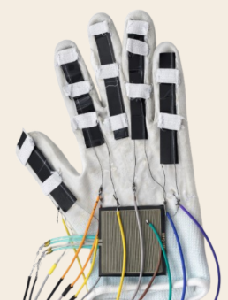

Project Motivation
Traditional physiotherapy can often be repetitive and demotivating for patients. The FlexiFun project was born from the need to create a more engaging and objective way to monitor hand rehabilitation, combining gamification with real-time clinical data.


The Solution
An integrated system featuring a sensorized glove that captures hand movements. These movements are translated into actions within a Unity-based game, providing immediate biofeedback to the user.

Clinical Monitoring
A dedicated PHP web dashboard allows physiotherapists to track session history, range of motion improvements, and patient engagement through data stored in a MySQL database.